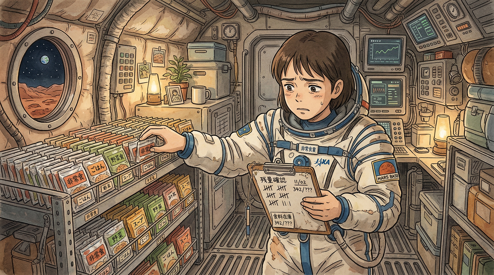
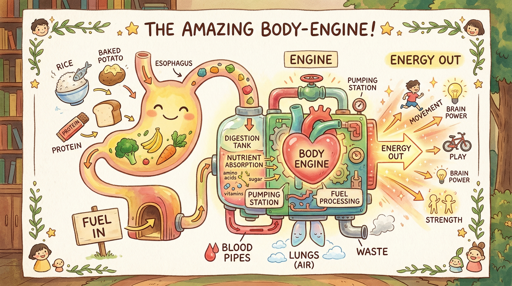
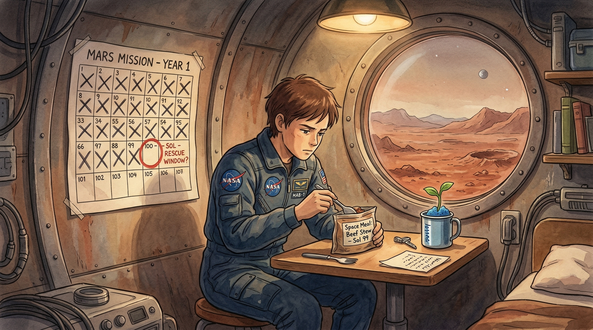
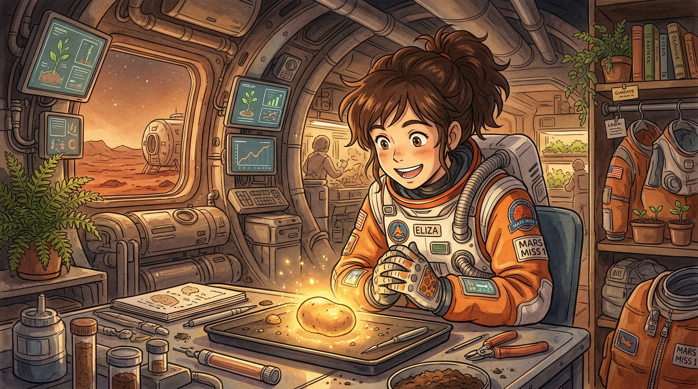

你的身体就像一辆小汽车 🚗
食物就是你的汽油 ⛽
不吃东西 → 没力气走路、没力气思考
就像车没油了，跑不动！
食物里的能量叫 "卡路里"
一个大人每天大约需要 2000 卡路里
一碗米饭大约 200 卡路里
所以一天至少要吃相当于 10 碗米饭 的能量！


马克是植物学家——专门研究植物的科学家 🌿
他选土豆，因为土豆有三个超能力：
1️⃣ 长得快 — 60-90天就能收获
2️⃣ 能量高 — 一个大土豆有约 150 卡路里
3️⃣ 容易种 — 切一小块带"芽眼"的土豆，埋进土里就能长出新的！